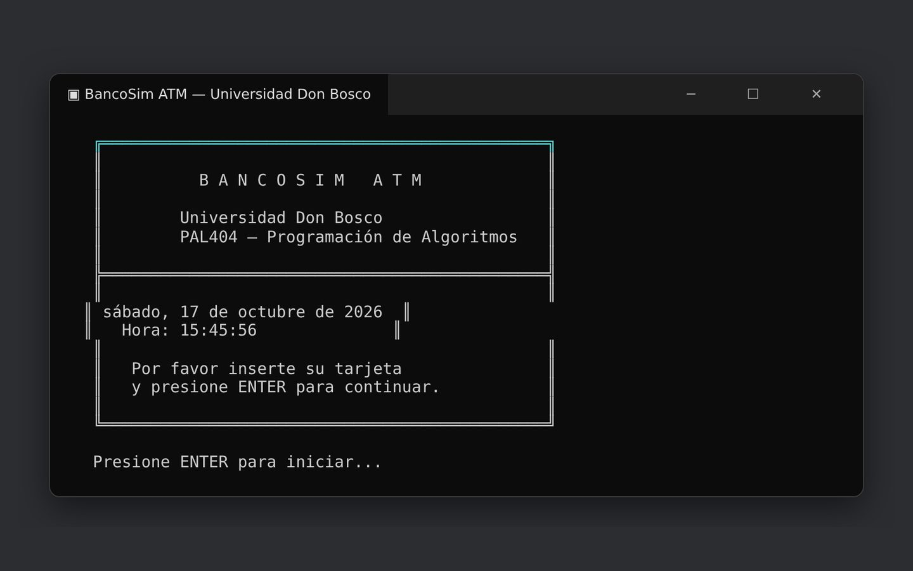
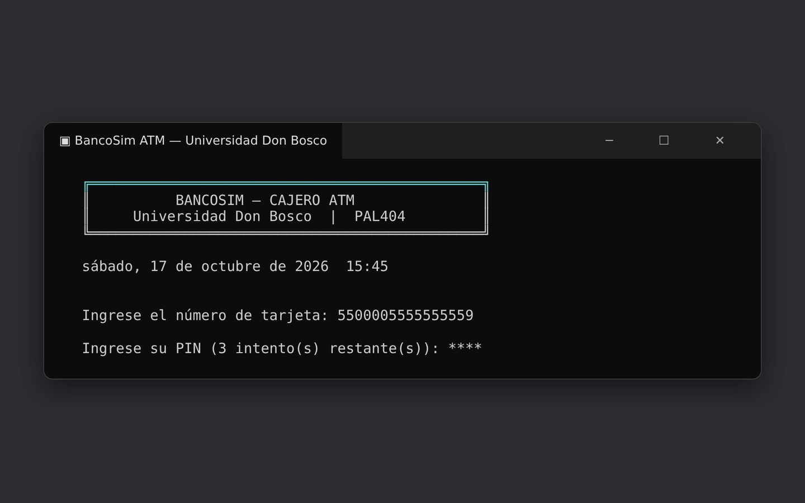
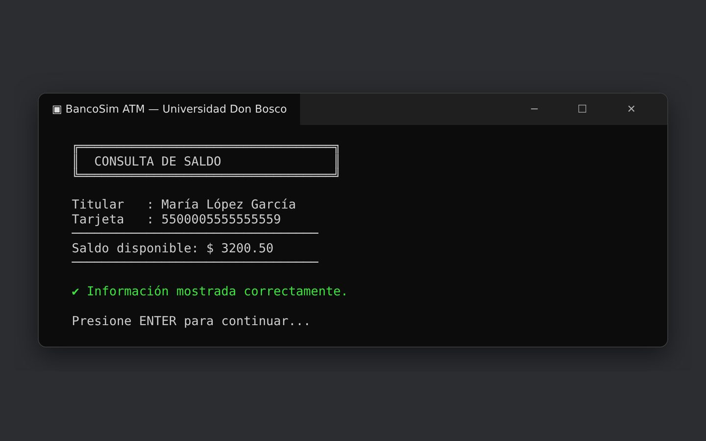
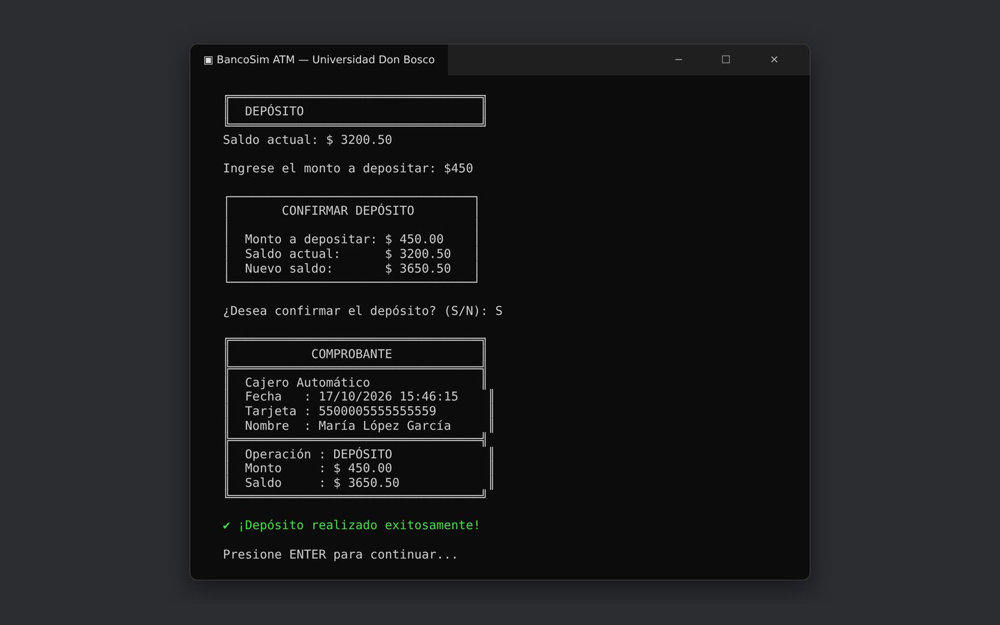
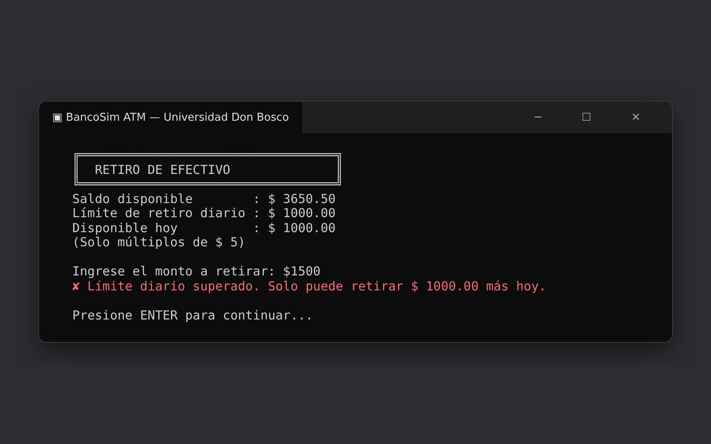
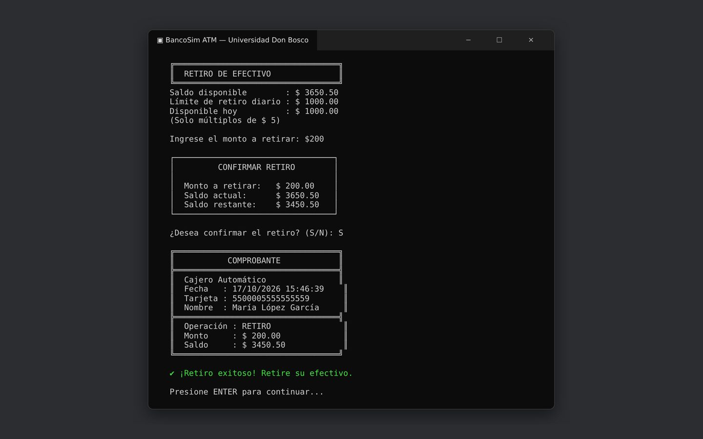
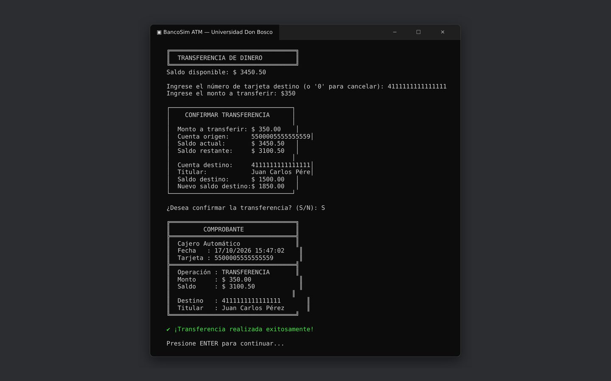
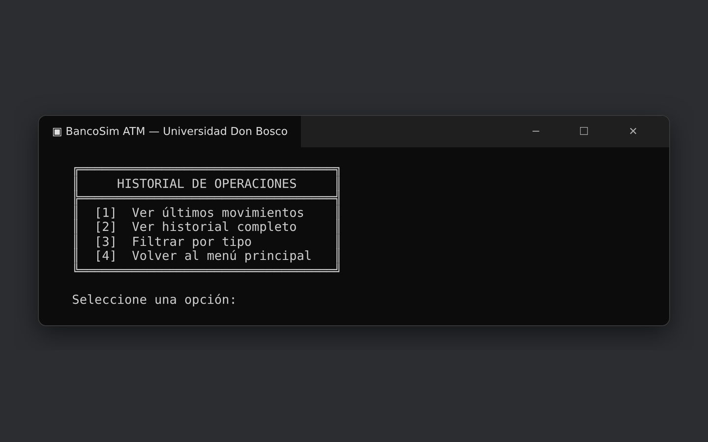

BancoSim ATM
Cajero automático en consola con tarjeta y PIN, consulta de saldo, depósitos, retiros con límite diario, transferencias entre cuentas, historial y comprobante de cada operación.

★ Objetivo
El reto
Un cajero tiene que ser simple para el usuario pero estricto por dentro: validar la tarjeta y el PIN, no dejar retirar más de lo permitido y que cada saldo cuadre después de cada operación.
★ Proceso
Cómo lo resolví
Armé un menú claro con siete opciones y pantallas dibujadas con marcos en la consola. Antes de cada movimiento el programa muestra un resumen para confirmar, valida montos y límites, actualiza los saldos de las dos cuentas en una transferencia y entrega un comprobante con fecha y hora.
★ Funciones
Lo que hace el programa
Acceso con tarjeta y PIN
Tres intentos para el PIN y una sesión que expira por inactividad.
Saldo y depósitos
Consulta el saldo y deposita con confirmación del nuevo saldo antes de aplicarlo.
Retiros con reglas
Límite diario de $1,000 y solo múltiplos de $5, con mensajes claros cuando algo no se puede.
Transferencias
Busca la cuenta destino, muestra al titular y actualiza los saldos de ambas cuentas.
Historial
Últimos movimientos, historial completo y filtro por tipo de operación.
Comprobantes
Cada operación termina con un recibo con fecha, hora, tarjeta, monto y saldo.
★ Galería
Capturas del programa







